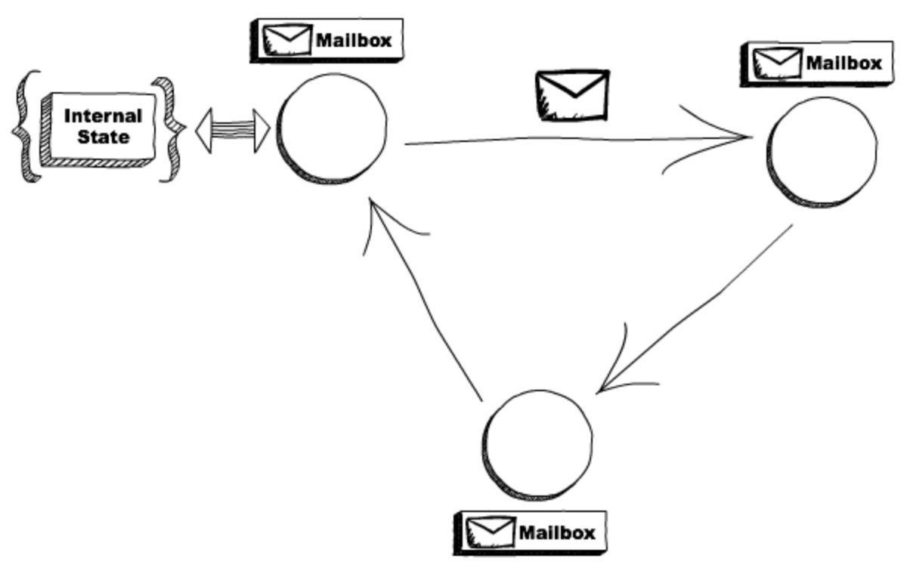

Intro to Actor Model
Choosing the right system architecture to be used in production is one of the most important parts of the development process. It’s going to decide the reliability of the tech infrastructure in your organization. When running services at scale, things are often prone to break. Mostly not because one service runs faulty, but that one (or more) of them doesn’t let the other to work as expected. This calls for a need of architecture, some ground rules that solves these cases.
Do they act?
So what are exactly these things called actors? Actors are fundamental units of computation. They can be seen as distributed services instead they need not exist in remote locations. Each actor is supposed to do one thing, handle just one functionality. The actor model is a conceptual model to deal with concurrent computation. Having an actor exist individually holds no meaning. Actors come together in systems.
Actors and mailboxes
Although multiple actors can run simultaneously, it’s crucial to understand that these actors will process messages simultaneously which means that one actor can have multiple messages to process. This gives rise to the need of a buffer of some kind to store these messages. Voila! Actors have something called as mailboxes, these mailboxes store extra messages received by the actor when it’s busy with one.

How does the model work
So actors provide you a very higher-level abstraction for concurrency and distributed systems. The idea has been to provide a system that takes care of thread management, message handling and service creation, for you. So when an actor receives a message, it is supposed to perform the following three operations
- Create more actors
- Send messages to actors it knows
- What to do with the next message
Every actor has two properties: state and behavior. So when a particular client/entity wants to communicate with an actor, they send messages to the mailbox, the mailbox is accessed by the actor and the computation is done (the computation could be either processing the data itself or directing others to do so).
Fault Tolerant
Having a supervisor from the model provides one of the biggest advantages for it’s actors. Fault tolerance. When different services/actors are running then it’s likely a case for one of them to fail, because well, it’s usually not possible to think “What more could go wrong” for each and every service. Having a distributed model allows us to handle faults when they occur. They simply follow an ideology of “let it fail”. They consider the case where one of the actors fail and the supervisor service handles the graceful shutdown and starts the service again.
Distributed, not distributed
Well, as the analogy I’ve been taking of the distributed systems, one or more of the actors need not exists locally. This allows us to leverage different computers in different locations.
Well I’m pretty old school these days. Ping me on anyone of the below mediums if you got any suggestions for the blog.